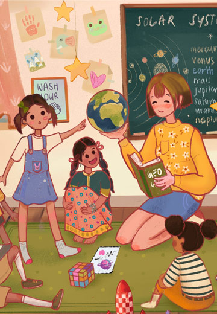

<section class="wrapper-section">
  <div class="container">
    <div class="success-row">
      <div class="success-img">
        
      </div>
      <h6 class="heading-badge">Impact of Covid-19 on Children</h6>
      <h2 class="stories-heading">Kalam Story at Jamghat</h2>
      <p>Kalam lives in a Rain Basera at Jama Masjid just by himself. His parents got separated when he was 7 years old,
        Kalam was not in favour of this decision and decided to run away from home. His 2 sisters and 2 younger brothers
        live with his mother while his elder brother also later left home and joined him and lives at Jama
        Masjid.<br><br>

        Kalam used to come to Aangan Day Care Center of Jamghat for homeless and street children before the sudden
        lockdown was announced in India due to Covid-19 pandemic. Before lockdown at Angan he used to get regular meals,
        guidance to study and other young children to play and spend time with. This gradually resulted in Kalam to
        spend most of his day at Angan home, and being in good company and supervision, it kept him away from bad habits
        that others of his age got addicted to.<br><br>

        This routine of kalam came to a sudden halt, as Aangan had to be shut down due to COVID-19 pandemic spread
        across the globe. This was not taken well by Kalam, as he suddenly lost the support, he did not know what to do
        next and how to spend his days. Lack of proper food and shelter made him angry and irritated, thus pushing him
        to a bad habit of alcohol and drug abuse. He no longer had access to a good and safe environment at Aangan and
        was around older boys and men on the street, who did not treat him well.<br><br>


        Slowly when infection rate decreased and the lockdown started to ease a little, Kalam got himself working as a
        waiter in weddings and functions to earn not more than 300/- per day. Aangan had not yet resumed and Kalam knew
        this is not what he wishes for himself but due to no better options and in order to survive he continued doing
        this work. He actually wanted to learn computer and mobile functioning and repairing. Someday, when he grows up
        he dreams to open his own shop, and in order to do this he wants support from adults.<br><br>

        Like every night has its dawn infection rate reduced and Aangan resumed again in phases. Kalam came back to
        Aangan and in few months enrolled for a mobile repairing vocational course. He has now completed his course and
        is applying for the job.<br><br>

        What Kalam says about JAMGHAT<br><br>

        Kalam says, “Care homes like Aangan should be there for all the children on the streets, or who have run away or
        do not have parents, just like me. I feel lucky to come across a place like this. The supervisors never made me
        feel less of myself and encouraged me to dream and learn.”
      </p>

    </div>
  </div>
</section>